Cache generation latents
Sample 1.28M latents using the checkpoint’s generation settings, balanced across 1,000 ImageNet classes.
for Latent Generative Models
1University of Toronto 2Université de Montréal 3Vijil *Equal contribution
In our paper, we show that Fréchet Distributional Decoder Alignment (FDDA) improves generation by adapting the decoder to generation-time latents. FDDA freezes the latent generator and trains only the decoder with a distribution-level objective.
A decoder learns from reconstruction latents zr ∼ pr, obtained by encoding real images. At generation time, it receives generator-produced latents zg ∼ pg. When these distributions differ, the decoder operates on inputs it was not directly trained on.
Generator-side FD post-training changes pg while keeping the decoder frozen. FDDA trains the decoder on pg itself. Figure 1 compares the two approaches, their generation gains, and their training costs.
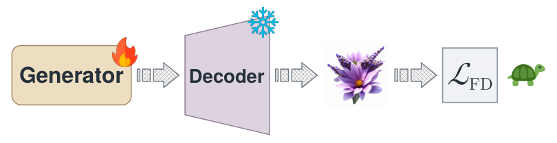
Generator-side FD post-training
Decoder-side FD post-training
(a) Generator-side vs. decoder-side FD post-training
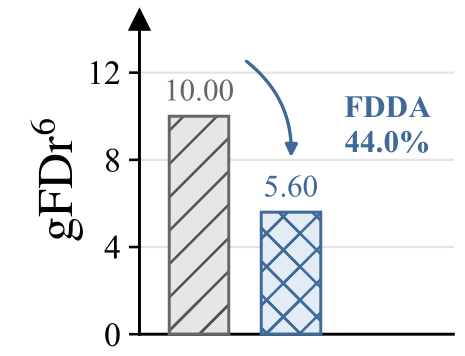
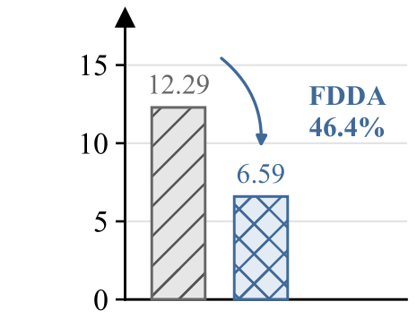
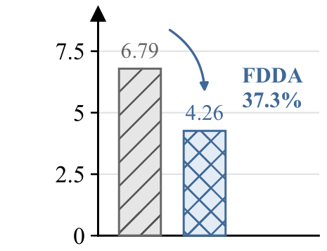
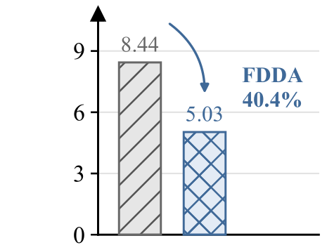
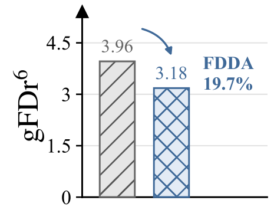
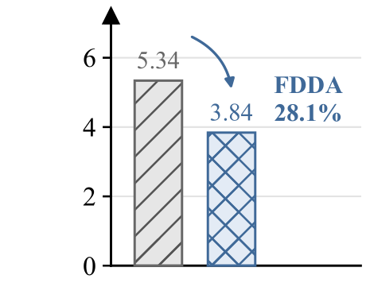
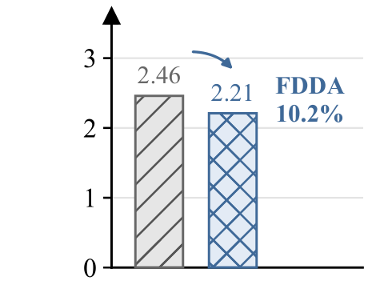
(b) FDDA gains before (top) and after (bottom) generator-side FD post-training
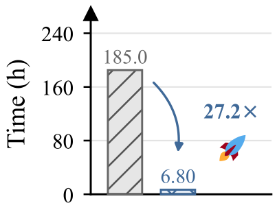
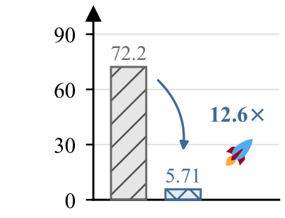
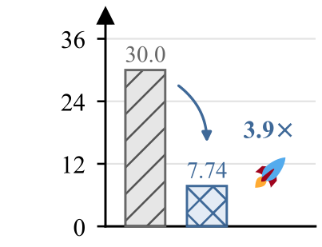
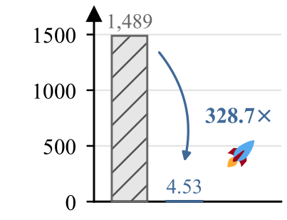
(c) Wall-clock cost of generator-side vs. decoder-side FD post-training
Across all 11 evaluated models, one epoch of FDDA reduces gFDr⁶ by 34.0–59.6% from the original checkpoints and by a further 10.2–57.2% after generator-side FD post-training.
FDDA matches the feature statistics of decoded generation-time latents to those of real images. Its distribution-level supervision requires no paired reconstruction targets.
We first cache latents from the frozen generator, then optimize the decoder in three fixed representation spaces. Gradients pass through the decoder and feature extractors, while only decoder parameters update.
is the decoder. denotes the image distribution obtained by decoding generation-time latents; compares feature means and covariances in representation .
Sample 1.28M latents using the checkpoint’s generation settings, balanced across 1,000 ImageNet classes.
Decode cached latents. Keep the generator, encoder, codebook, and representation models frozen.
Optimize FD in Inception-v3, MAE, and SigLIP2. Normalize each term by its stop-gradient FD value plus 0.01.
Initialize statistics from 50,000 samples. Use an EMA decay of 0.999; current minibatch features carry gradients.
FDDA adapts the decoder to the latent distribution it receives during generation, without changing the generator.
We evaluate 11 class-conditional ImageNet 256 × 256 configurations spanning LlamaGen, GigaTok, TiTok, VAR, and one-step iMF. Each FDDA model trains for one epoch.
gFDr⁶ averages six Fréchet distances, each normalized by the corresponding FD of the ImageNet validation set. We report all six spaces: Inception-v3 (gFID), ConvNeXt-v2, DINOv2, MAE, SigLIP2, and CLIP. ConvNeXt-v2, DINOv2, and CLIP are held out from training.
| Model | Generator FD | Decoder FD | gFID ↓ | gIS ↑ | gFDconv ↓ | gFDdino ↓ | gFDmae ↓ | gFDsig ↓ | gFDclip ↓ | gFDr6 ↓ |
|---|---|---|---|---|---|---|---|---|---|---|
| Discrete autoregressive generative models | ||||||||||
| LlamaGen-B | ✗ | ✗ | 5.17 | 196.1 | 233.91 | 244.12 | 0.528 | 21.03 | 149.44 | 16.48 |
| LlamaGen-B | ✗ | ✓ | 2.74 | 209.3 | 237.39 | 190.90 | 0.250 | 11.50 | 115.52 | 10.88 ↓34.0% |
| LlamaGen-L | ✗ | ✗ | 4.23 | 290.1 | 113.61 | 121.41 | 0.383 | 12.20 | 97.13 | 10.00 |
| LlamaGen-L | ✗ | ✓ | 1.87 | 303.5 | 103.27 | 87.98 | 0.109 | 5.19 | 73.07 | 5.60 ↓44.0% |
| GigaTok-S-S | ✗ | ✗ | 4.34 | 268.5 | 135.95 | 182.66 | 0.432 | 15.25 | 112.26 | 12.29 |
| GigaTok-S-S | ✗ | ✓ | 1.68 | 281.6 | 99.96 | 123.43 | 0.169 | 6.32 | 74.75 | 6.59 ↓46.4% |
| TiTok-L-32 | ✗ | ✗ | 2.75 | 194.1 | 190.86 | 192.05 | 0.567 | 18.86 | 157.93 | 15.32 |
| TiTok-L-32 | ✗ | ✓ | 1.34 | 202.6 | 181.26 | 116.29 | 0.124 | 5.49 | 70.83 | 6.19 ↓59.6% |
| TiTok-B-64 | ✗ | ✗ | 2.44 | 206.6 | 174.01 | 197.82 | 0.509 | 17.36 | 154.73 | 14.57 |
| TiTok-B-64 | ✗ | ✓ | 1.61 | 214.9 | 184.09 | 129.98 | 0.157 | 6.18 | 80.39 | 6.99 ↓52.0% |
| VAR-d16 | ✗ | ✗ | 3.27 | 280.8 | 148.97 | 150.36 | 0.428 | 13.56 | 104.23 | 11.12 |
| VAR-d16 | ✗ | ✓ | 1.62 | 280.1 | 152.45 | 121.49 | 0.175 | 6.68 | 81.14 | 7.03 ↓36.8% |
| VAR-d20 | ✗ | ✗ | 2.61 | 305.2 | 111.78 | 102.19 | 0.344 | 9.84 | 85.74 | 8.46 |
| VAR-d20 | ✗ | ✓ | 1.32 | 296.9 | 124.40 | 82.77 | 0.127 | 4.95 | 65.96 | 5.34 ↓36.9% |
| VAR-d24 | ✗ | ✗ | 2.11 | 314.7 | 94.78 | 76.34 | 0.286 | 7.37 | 73.93 | 6.79 |
| VAR-d24 | ✗ | ✓ | 1.24 | 304.4 | 112.00 | 60.89 | 0.097 | 3.75 | 55.13 | 4.26 ↓37.3% |
| Flow-matching generative models, one-step | ||||||||||
| iMF-B | ✗ | ✗ | 3.49 | 253.7 | 188.08 | 206.17 | 0.487 | 19.65 | 156.14 | 15.40 |
| iMF-B | ✗ | ✓ | 1.65 | 268.1 | 115.47 | 144.39 | 0.232 | 8.10 | 105.06 | 8.54 ↓44.5% |
| iMF-L | ✗ | ✗ | 1.88 | 275.4 | 105.53 | 111.56 | 0.282 | 11.30 | 101.18 | 9.11 |
| iMF-L | ✗ | ✓ | 1.26 | 281.0 | 75.93 | 83.77 | 0.137 | 5.12 | 72.12 | 5.48 ↓39.8% |
| iMF-XL | ✗ | ✗ | 1.81 | 281.9 | 97.57 | 103.01 | 0.261 | 10.37 | 94.58 | 8.44 |
| iMF-XL | ✗ | ✓ | 1.14 | 288.3 | 67.12 | 77.30 | 0.117 | 4.67 | 67.74 | 5.03 ↓40.4% |
All metrics follow the same evaluation protocol as Yang et al. (2026). ✓ / ✗ indicate whether the named component receives FD post-training. Lower FD and higher gIS are better. Percentages report the relative gFDr⁶ reduction from the corresponding row without decoder FD.
FDDA improves gFID and gFDr⁶ on every original pretrained model. TiTok-L-32 improves from 2.75 to 1.34 gFID and from 15.32 to 6.19 gFDr⁶, with its latent generator unchanged.
We apply FDDA to stronger checkpoints whose generators have already undergone FD post-training, using FDAR for autoregressive models and FD-SIM for iMF.
| Model | Generator FD | Decoder FD | gFID ↓ | gIS ↑ | gFDconv ↓ | gFDdino ↓ | gFDmae ↓ | gFDsig ↓ | gFDclip ↓ | gFDr6 ↓ |
|---|---|---|---|---|---|---|---|---|---|---|
| Discrete autoregressive generative models | ||||||||||
| LlamaGen-B | ✓ | ✗ | 2.45 | 277.9 | 118.37 | 105.41 | 0.174 | 6.07 | 70.55 | 6.33 |
| LlamaGen-B | ✓ | ✓ | 2.23 | 275.9 | 134.35 | 95.79 | 0.100 | 4.55 | 61.77 | 5.27 ↓16.7% |
| LlamaGen-L | ✓ | ✗ | 1.32 | 315.9 | 74.54 | 57.09 | 0.104 | 3.18 | 54.27 | 3.96 |
| LlamaGen-L | ✓ | ✓ | 1.34 | 313.5 | 83.61 | 49.14 | 0.052 | 2.40 | 44.71 | 3.18 ↓19.7% |
| GigaTok-S-S | ✓ | ✗ | 2.52 | 291.6 | 97.96 | 82.97 | 0.219 | 4.45 | 57.20 | 5.34 |
| GigaTok-S-S | ✓ | ✓ | 1.74 | 296.5 | 82.50 | 72.77 | 0.088 | 2.99 | 46.12 | 3.84 ↓28.1% |
| TiTok-L-32 | ✓ | ✗ | 2.25 | 211.7 | 133.58 | 143.61 | 0.334 | 12.24 | 121.85 | 10.69 |
| TiTok-L-32 | ✓ | ✓ | 1.35 | 215.1 | 161.52 | 103.08 | 0.105 | 4.65 | 64.74 | 5.49 ↓48.6% |
| TiTok-B-64 | ✓ | ✗ | 1.45 | 238.7 | 102.44 | 132.47 | 0.300 | 9.87 | 111.45 | 9.29 |
| TiTok-B-64 | ✓ | ✓ | 1.42 | 240.3 | 148.23 | 99.99 | 0.113 | 4.50 | 65.35 | 5.42 ↓41.7% |
| VAR-d16 | ✓ | ✗ | 1.85 | 307.9 | 80.75 | 47.20 | 0.154 | 3.30 | 38.19 | 3.65 |
| VAR-d16 | ✓ | ✓ | 1.35 | 307.3 | 77.91 | 45.42 | 0.040 | 1.92 | 34.22 | 2.62 ↓28.2% |
| VAR-d20 | ✓ | ✗ | 1.64 | 309.4 | 62.35 | 31.78 | 0.596 | 2.27 | 31.10 | 4.63 |
| VAR-d20 | ✓ | ✓ | 1.08 | 308.1 | 76.47 | 28.58 | 0.026 | 1.28 | 28.03 | 1.98 ↓57.2% |
| VAR-d24 | ✓ | ✗ | 1.51 | 320.7 | 55.29 | 26.84 | 0.227 | 1.33 | 25.09 | 2.65 |
| VAR-d24 | ✓ | ✓ | 1.09 | 308.3 | 59.35 | 24.81 | 0.022 | 0.96 | 24.54 | 1.67 ↓37.0% |
| Flow-matching generative models, one-step | ||||||||||
| iMF-B | ✓ | ✗ | 0.86 | 307.1 | 65.97 | 89.05 | 0.154 | 5.46 | 70.35 | 5.57 |
| iMF-B | ✓ | ✓ | 0.91 | 304.0 | 74.66 | 80.48 | 0.100 | 3.91 | 59.69 | 4.54 ↓18.5% |
| iMF-L | ✓ | ✗ | 0.77 | 303.4 | 43.60 | 38.89 | 0.050 | 2.46 | 38.85 | 2.72 |
| iMF-L | ✓ | ✓ | 0.80 | 299.1 | 65.13 | 36.92 | 0.035 | 2.05 | 33.72 | 2.43 ↓10.7% |
| iMF-XL | ✓ | ✗ | 0.76 | 306.7 | 40.34 | 33.85 | 0.043 | 2.21 | 35.74 | 2.46 |
| iMF-XL | ✓ | ✓ | 0.78 | 303.7 | 57.53 | 32.51 | 0.030 | 1.82 | 31.61 | 2.21 ↓10.2% |
All metrics follow the same evaluation protocol as Yang et al. (2026). ✓ / ✗ indicate whether the named component receives FD post-training. Lower FD and higher gIS are better. Percentages report the relative gFDr⁶ reduction from the corresponding row without decoder FD.
FDDA further improves gFDr⁶ on all 11 models. VAR-d20 drops from 4.63 to 1.98, a 57.2% reduction. Individual gFID gains are mixed in this setting: LlamaGen-L and the three iMF models show small gFID increases even as their aggregate gFDr⁶ improves.
We compare total wall-clock time on one H100. FDDA includes both latent pool construction and decoder training, so the comparison accounts for sampling cost.
| Model | Generator-side FD | Decoder-side FD (FDDA) | Cost reduction | |||||
|---|---|---|---|---|---|---|---|---|
| Epochs | Generator params | Train (h) | Decoder params | Latent pool (h) | Train (h) | Total (h) | ||
| Discrete autoregressive generative models | ||||||||
| LlamaGen-B | 1.25 | 111M | 100.6 | 42.5M | 1.50 | 2.77 | 4.27 | 23.6 × |
| LlamaGen-L | 1.25 | 343M | 185.0 | 42.5M | 4.02 | 2.78 | 6.80 | 27.2 × |
| GigaTok-S-S | 1.25 | 111M | 72.2 | 83.8M | 2.68 | 3.03 | 5.71 | 12.6 × |
| TiTok-L-32 | 1.25 | 177M | 16.7 | 337.6M | 0.29 | 3.19 | 3.48 | 4.8 × |
| TiTok-B-64 | 1.25 | 177M | 16.1 | 118.8M | 0.60 | 2.75 | 3.35 | 4.8 × |
| VAR-d16 | 1.25 | 310M | 18.9 | 64.7M | 1.62 | 3.59 | 5.21 | 3.6 × |
| VAR-d20 | 1.25 | 600M | 24.4 | 64.7M | 2.85 | 3.59 | 6.44 | 3.8 × |
| VAR-d24 | 1.25 | 1.0B | 30.0 | 64.7M | 4.14 | 3.60 | 7.74 | 3.9 × |
| Flow-matching generative models, one-step | ||||||||
| iMF-B | 100 | 89M | 935 | 49.5M | 0.12 | 3.77 | 3.89 | 240.4 × |
| iMF-L | 100 | 409M | 1252 | 49.5M | 0.51 | 3.76 | 4.27 | 293.2 × |
| iMF-XL | 100 | 610M | 1489 | 49.5M | 0.77 | 3.76 | 4.53 | 328.7 × |
Single H100 GPU. All FDDA models train for one epoch. Total FDDA time includes both generation-time latent pool construction and decoder training. Cost reduction = generator-side FD training time / total FDDA time.
FDDA costs 3.6–27.2× less time for autoregressive models and 240.4–328.7× less for iMF. One epoch of adaptation and cached latents shorten the training path. Decoder parameter count is lower for most evaluated configurations.
We replace generation-time latents zg with reconstruction latents zr, keeping the decoder-side FD procedure otherwise unchanged. All reported metrics evaluate generation.
| Model | Generator FD | Decoder FD | Decoder latents | gFID ↓ | gIS ↑ | gFDconv ↓ | gFDdino ↓ | gFDmae ↓ | gFDsig ↓ | gFDclip ↓ | gFDr6 ↓ |
|---|---|---|---|---|---|---|---|---|---|---|---|
| iMF-B | ✗ | ✗ | — | 3.49 | 253.7 | 188.08 | 206.17 | 0.487 | 19.65 | 156.14 | 15.40 |
| iMF-B | ✗ | ✓ | zr | 3.27 | 265.1 | 229.78 | 172.91 | 0.361 | 15.13 | 141.03 | 12.91 ↓16.2% |
| iMF-B | ✗ | ✓ | zg | 1.65 | 268.1 | 115.47 | 144.39 | 0.232 | 8.10 | 105.06 | 8.54 ↓44.5% |
| iMF-B | ✓ | ✗ | — | 0.86 | 307.1 | 65.97 | 89.05 | 0.154 | 5.46 | 70.35 | 5.57 |
| iMF-B | ✓ | ✓ | zr | 1.08 | 305.5 | 113.59 | 84.02 | 0.158 | 5.29 | 68.01 | 5.58 ↑0.2% |
| iMF-B | ✓ | ✓ | zg | 0.91 | 304.0 | 74.66 | 80.48 | 0.100 | 3.91 | 59.69 | 4.54 ↓18.5% |
| iMF-L | ✗ | ✗ | — | 1.88 | 275.4 | 105.53 | 111.56 | 0.282 | 11.30 | 101.18 | 9.11 |
| iMF-L | ✗ | ✓ | zr | 1.79 | 285.2 | 157.99 | 92.29 | 0.187 | 7.48 | 85.72 | 7.13 ↓21.7% |
| iMF-L | ✗ | ✓ | zg | 1.26 | 281.0 | 75.93 | 83.77 | 0.137 | 5.12 | 72.12 | 5.48 ↓39.8% |
| iMF-L | ✓ | ✗ | — | 0.77 | 303.4 | 43.60 | 38.89 | 0.050 | 2.46 | 38.85 | 2.72 |
| iMF-L | ✓ | ✓ | zr | 0.98 | 301.6 | 101.26 | 38.36 | 0.089 | 2.92 | 39.21 | 3.19 ↑17.3% |
| iMF-L | ✓ | ✓ | zg | 0.80 | 299.1 | 65.13 | 36.92 | 0.035 | 2.05 | 33.72 | 2.43 ↓10.7% |
| iMF-XL | ✗ | ✗ | — | 1.81 | 281.9 | 97.57 | 103.01 | 0.261 | 10.37 | 94.58 | 8.44 |
| iMF-XL | ✗ | ✓ | zr | 1.67 | 289.0 | 141.05 | 85.23 | 0.159 | 6.56 | 76.87 | 6.35 ↓24.8% |
| iMF-XL | ✗ | ✓ | zg | 1.14 | 288.3 | 67.12 | 77.30 | 0.117 | 4.67 | 67.74 | 5.03 ↓40.4% |
| iMF-XL | ✓ | ✗ | — | 0.76 | 306.7 | 40.34 | 33.85 | 0.043 | 2.21 | 35.74 | 2.46 |
| iMF-XL | ✓ | ✓ | zr | 0.95 | 299.2 | 90.05 | 34.10 | 0.070 | 2.41 | 34.36 | 2.74 ↑11.4% |
| iMF-XL | ✓ | ✓ | zg | 0.78 | 303.7 | 57.53 | 32.51 | 0.030 | 1.82 | 31.61 | 2.21 ↓10.2% |
zr: reconstruction latents from real images; zg: generation-time latents from the frozen generator. ✓ / ✗ indicate the presence / absence of FD post-training. All metrics evaluate generated images. Percentages show relative gFDr⁶ change from the row without decoder FD in the same generator setting; ↓ indicates improvement, ↑ indicates degradation. Bold values reproduce the emphasis in the paper.
Generation-time latents yield larger gFDr⁶ gains on the original iMF checkpoints. After generator-side FD post-training, reconstruction latents increase gFDr⁶ at all three scales; generation-time latents retain the improvement.
A separate GigaTok-S-S experiment trains for five epochs, with the learning-rate schedule stretched over the full run.
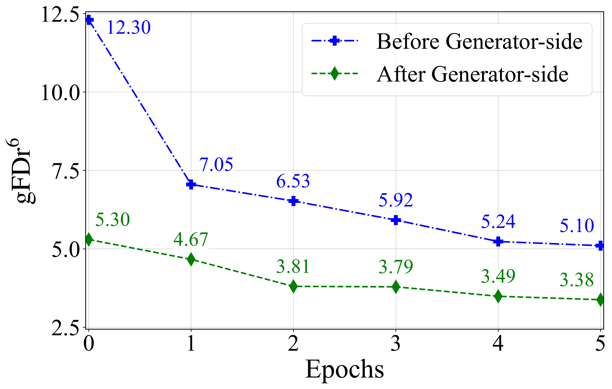
gFDr⁶ continues to decrease across all five epochs in both settings. The five-epoch endpoints reach 5.10 before generator-side FD post-training and 3.38 after it.
The TiTok-L-32 comparisons isolate decoder adaptation in two settings. First, we apply FDDA to the original pretrained generator.
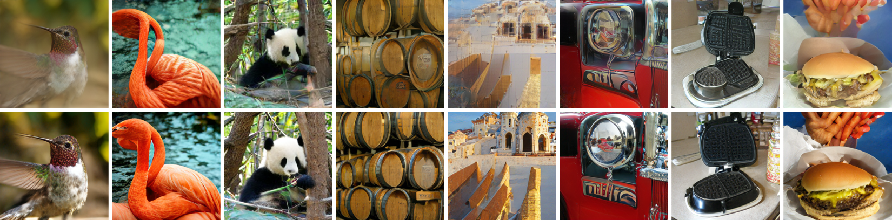
The adapted decoder generally produces richer fine details, fewer visible artifacts, and more consistent semantics. Here, TiTok-L-32 gFDr⁶ decreases from 15.32 to 6.19.
We then keep the generator-side FD-post-trained checkpoint fixed and apply additional decoder-side alignment.
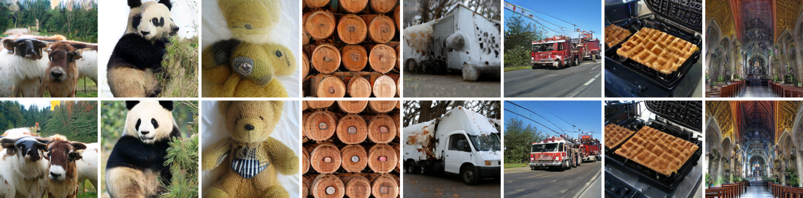
Decoder adaptation adds visible changes after generator-side post-training. TiTok-L-32 gFDr⁶ falls from 10.69 to 5.49, complementing the generator’s improvement.
@article{fang2026efficient,
title = {Efficient Fréchet Distributional Decoder Alignment for Latent Generative Models},
author = {Fang, Xianghong and Zhu, Jiajun and Aimeur, Esma and Kong, Dehan and Rudner, Tim G. J.},
journal = {arXiv},
year = {2026}
}